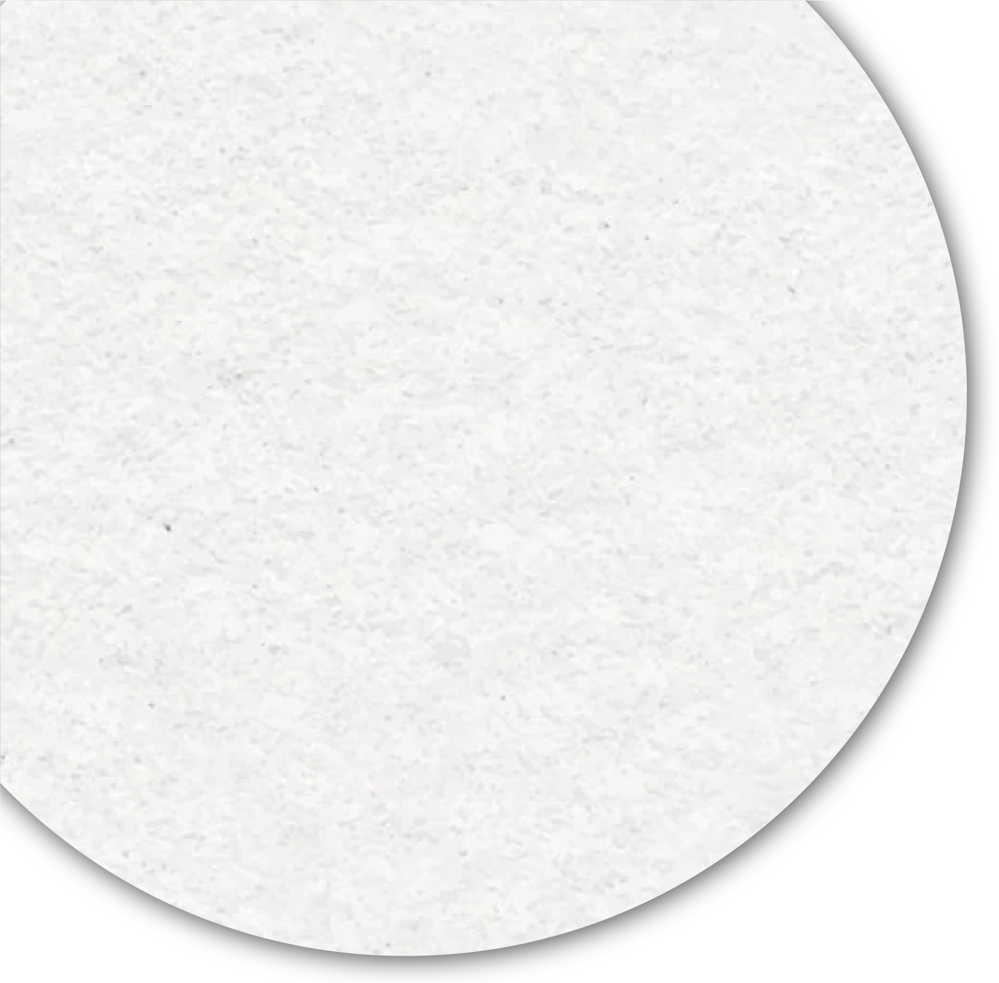

- 桃園市立美術館
- 兒童美術館 預計於112年完工

藝術山丘
桃園市立美術館/兒童美術館
預計 2024年9月 完工
「桃園市立美術館與兒童美術館選址於中壢青埔高鐵特區，規劃「市立美術館」與「兒童美術館」以空中廊道相連的2棟建築物，並以綠意繚繞的「藝術山丘」作為建築主體外觀，將成為桃園市未來的藝術大門和樞紐，甚至串連周圍社區發展成藝術村聚落。預計112年3月優先完成「兒童美術館」棟，「市立美術館」棟則預計於113年6月竣工。